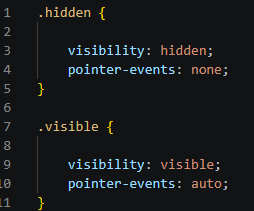

CSS : Entre puissance et limites
Mardi 23 juin 2026

Aujourd'hui, je suis tombé sur une des limites du CSS.
Comment l'expliquer simplement? Commençons par un exemple simple.
Avec justement, le projet HyperCSS par exemple.
Donc, même si avec HyperCSS j'essaye de repousser les limites de CSS, il arrive que nous nous heurtions a ces fameuses limites.
Ici, le but était de faire une hitbox pour chaque ennemi.
Et, la création fonctionne.
Le positionnement fonctionne.
Le déclenchement par pseudo-collision fonctionne.
Mais, l'animation n'a pas fonctionnées. Et, c'est la seule partie qui ne fonctionne pas.
Et, je ne sais pas ce qui ne fonctionne pas.
Enfin, j'ai trouvé le problème MAIS, je ne sais pas comment le corriger.
J'ai constaté que, même si j'utilise le code suivant
{
visibility: hidden;
pointer-events: none;
}
dans chacune de mes propriété CSS, il reste quand même une micro-seconde durant laquelle chaque élément généré par l'animation semble quand même valoir
{
visibility: visible;
pointer-events: auto;
}
et je ne sais pas expliquer pourquoi...